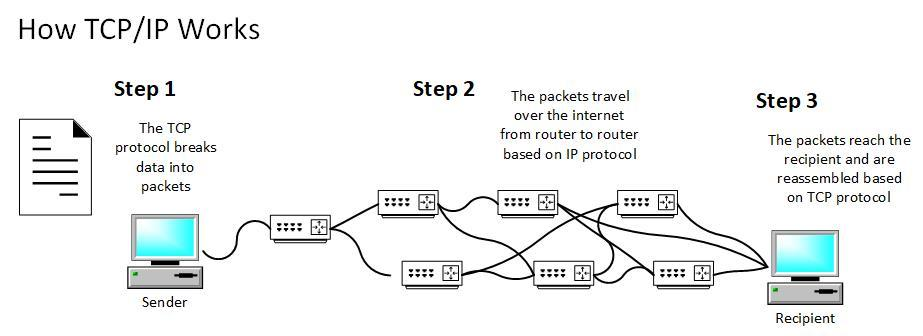

Transmission Control Protocol / Internet Protocol (TCP/IP)

TCP/IP (Transmission Control Protocol/Internet Protocol) is a set of communication protocols used to interconnect network devices on the internet. It defines how data should be packaged, transmitted, routed, and received across networks.
The TCP/IP model consists of layers that work together to ensure reliable communication: data is broken into packets, sent across networks, and reassembled at the destination.
TCP is responsible for ensuring data delivery accuracy, while IP handles addressing and routing of packets to the correct destination.